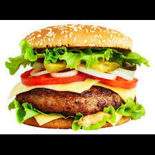
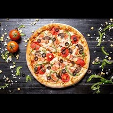
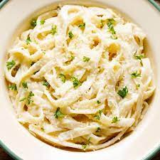
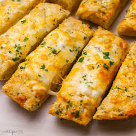

Burger
Our classic cheeseburger is made with a juicy, all-chicken patty cooked to perfection and topped with melted American cheese, crisp lettuce, ripe tomato, and sliced onion. Served on a freshly baked brioche bun and finished with our signature special sauce, this burger is a timeless favorite that never disappoints. Upgrade your order with a side of crispy fries or a refreshing drink for the ultimate meal.

Pizza
Our Margherita pizza is a classic Neapolitan-style pizza that is a true masterpiece. Made with the finest San Marzano tomatoes, fresh mozzarella cheese, and a sprinkle of aromatic basil, this pizza is a true representation of Italian culinary tradition. The crust is thin and crispy, with a slight char on the edges, and the toppings are perfectly balanced to create a harmony of flavors. Whether you're a pizza purist or simply looking for a delicious and satisfying meal, our Margherita pizza is sure to hit the spot. Add your favorite toppings for a personalized touch or enjoy it as is for a true taste of Italy.

Pasta
Our Spaghetti Carbonara is a creamy and savory dish that will transport your taste buds straight to Italy. Made with al dente spaghetti, crispy bacon, Parmesan cheese, and a rich egg yolk sauce, this pasta is a true indulgence. The sauce is cooked to perfection, with just the right balance of creaminess and saltiness, and the bacon adds a delicious crunch and smoky flavor to the dish. Served with a side of garlic bread and a fresh salad, this pasta is the ultimate comfort food that will leave you feeling satisfied and happy. Perfect for a romantic dinner or a night out with friends, our Spaghetti Carbonara is a must-try.

Garlic Bread
Our Garlic Bread is a warm and crispy delight that will tantalize your taste buds. Made with freshly baked bread, butter, garlic, and a sprinkle of herbs, this bread is the perfect accompaniment to any meal. The bread is baked to perfection, with a golden crust that gives way to a soft and fluffy interior. The garlic and herb toppings add a burst of flavor that will make you want to savor every bite. Served hot and fresh, our Garlic Bread is the ideal starter or side dish that will leave you wanting more. Perfect for sharing with friends or enjoying on your own, this bread is a true crowd-pleaser that you won't be able to resist.